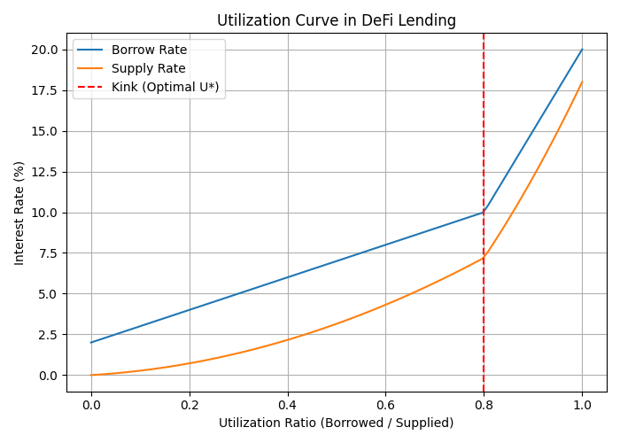
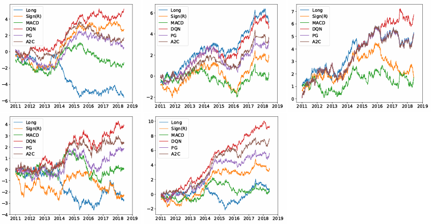

Introduction
Reinforcement Learning (RL) has moved far beyond academic curiosity—it is now being applied to some of the world’s most complex and dynamic systems, from financial markets to decentralized protocols.
In particular, RL is reshaping how we think about governance, trading, and risk management in environments where rules are constantly changing.
This blog explores two major domains where RL is having impact:
- Decentralized Finance (DeFi) – where RL agents can govern lending pools, adjust interest rates, and prevent insolvency.
- Algorithmic Trading – where RL agents learn optimal trading strategies directly from market data.
Together, these works show how RL can serve as the decision-making engine of future virtual economies.
Reinforcement Learning in Virtual Economies:
Table of Contents
- Governing DeFi with AI
- DeFi vs Traditional Finance: Lending by Numbers
- The Utilization Curve: How Interest Rates Work in DeFi
- Loan-to-Value (LTV) and Overcollateralization
- Why RL in DeFi Governance?
- The RL Workflow in DeFi
- Results: RL vs Rule-Based Governance
- Conclusion
- References
Governing DeFi with AI
Virtual economies are no longer confined to video games. With the rise of cryptocurrencies and Decentralized Finance (DeFi), we now have financial ecosystems that exist entirely on-chain. These systems facilitate lending, borrowing, and trading without traditional intermediaries like banks. Instead, they rely on smart contracts—self-executing code deployed on blockchains.
However, these protocols are still governed by human decisions—developers and communities vote to set critical parameters like interest rates, collateral requirements, and liquidation thresholds. This manual governance process is slow, biased, and often ill-suited to crypto’s volatile markets.
This is where Reinforcement Learning (RL) comes in. RL agents can continuously monitor markets, simulate outcomes, and automatically adjust parameters to optimize long-term outcomes such as profitability, liquidity stability, and resilience to attacks. Two recent works exemplify this direction:
- Auto.gov: An RL-based governance agent that dynamically adjusts risk parameters like collateral factors to prevent insolvency and resist price oracle attacks.
- From Rules to Rewards: An RL framework that learns to adjust interest rates in Aave lending pools, outperforming static rule-based models under stress scenarios like the 2021 crash and the 2023 USDC depeg.
DeFi vs Traditional Finance: Lending by Numbers
To understand why RL is valuable, let’s first compare traditional finance (TradFi) and DeFi lending.
Traditional Lending (Bank Example)
- You want to borrow $1000.
- The bank checks your credit score and income.
- If approved, you deposit collateral (e.g., your car worth $2000).
- You borrow at a fixed interest rate (say 8% annually).
- If you default, the bank repossesses your car.
Key point: Banks rely on creditworthiness and legal enforcement.
DeFi Lending (Aave Example)
- Alice deposits $100 ETH into Aave.
- Protocol sets Loan-to-Value (LTV) = 70%.
- Alice can borrow $70 USDC.
- If ETH price drops 40% (her $100 ETH is now worth $60), her collateral value < debt.
- Smart contract liquidates her position automatically, selling her ETH to repay lenders.
Key point: DeFi relies on overcollateralization and liquidation bots, not credit checks.
The Utilization Curve: How Interest Rates Work in DeFi
One of the most important mechanisms in DeFi lending is the utilization curve, which governs how interest rates change depending on market demand.
Utilization Ratio
$$ U = \frac{\text{Total Borrowed}}{\text{Total Supplied}} $$
-
Low Utilization (U close to 0):
Few borrowers, plenty of liquidity. Interest rates stay low to encourage borrowing. -
High Utilization (U close to 1):
Most liquidity is borrowed, very little remains. Rates increase sharply to discourage borrowing and attract more deposits.
Example
- Total Supplied = 1000 USDC
- Total Borrowed = 700 USDC
- Utilization = 700 / 1000 = 70%
At 70%, the borrow rate might be 8% and the deposit rate 5%. If utilization rises to 90%, the borrow rate could spike to 25% to prevent liquidity shortages.
This creates a kinked utilization curve:
- Smooth slope at low utilization.
- Sharp increase after a threshold (e.g., 80%).
Such dynamics are crucial but also rigid when hard-coded into smart contracts. RL offers a way to adapt these curves dynamically.

Loan-to-Value (LTV) and Overcollateralization
In DeFi, loans are overcollateralized to protect lenders.
- Loan-to-Value (LTV):
Ratio of borrowed amount to collateral value.
$$ \text{LTV} = \frac{\text{Loan Value}}{\text{Collateral Value}} $$
- Overcollateralization:
Borrowers must deposit more than they borrow.
Example 1 – Safe Position
- Deposit = $200 ETH
- LTV = 70%
- Max Borrow = $140 USDC
- Actual Borrow = $100 USDC
- LTV = 50% → Safe position.
Example 2 – Risky Position
- Same deposit = $200 ETH
- Borrow = $140 USDC
- ETH price falls 30% → Collateral now worth $140.
- New LTV = 100% → Position is liquidated.
Liquidation prevents systemic insolvency but can be brutal for borrowers. RL can help by tuning liquidation thresholds and collateral factors dynamically to balance risk and efficiency.
Why RL in DeFi Governance?
Currently, DeFi governance relies on:
- Manual proposals in forums.
- Community voting (governance tokens).
- Implementation delays (days or weeks).
Problems:
- Too slow for volatile markets.
- Centralized in practice (whales dominate votes).
- Static rules ignore market stress.
RL provides:
- Adaptive governance → protocols adjust within minutes, not weeks.
- Objective optimization → maximize profitability and stability.
- Resilience to attacks → respond in real time to flash loan or oracle exploits.
Example: Auto.gov prevented losses from simulated oracle attacks that drained protocols like bZx and Cream Finance.
The RL Workflow in DeFi
Reinforcement Learning models DeFi as a Markov Decision Process (MDP).
-
States (S):
Market conditions like tokens’ prices, utilization, liquidity, collateral ratios, volatility. -
Actions (A):
Adjust parameters (e.g., interest rates, collateral factor, liquidation threshold). -
Rewards (R):
Objectives such as:- Maximize protocol profitability.
- Maintain liquidity efficiency.
- Minimize bad debt.
-
Policy (π):
The agent’s learned strategy for choosing actions.
Offline RL
- Trains on historical data (e.g., Aave v2/v3).
- Safe: no risk of experimenting live.
- Example: TD3-BC learned to preemptively adjust rates during the USDC depeg in 2023.
Online RL
- Uses simulated environments (e.g., Auto.gov modeled Aave-like lending pools).
- RL agents explore and learn in simulation.
- Once trained, policies can be deployed on-chain.
Results: RL vs Rule-Based Governance
Profitability
- Auto.gov paper improved profitability by 60%+ in simulations and 10x over static baselines.
Stress Events
- TD3-BC reacted faster to the FTX collapse (2022) and ETH crash (2024) than Aave’s rules, improving liquidity provider retention.
Capital Efficiency
- RL produced smoother rate curves, reducing shocks for borrowers and improving returns for depositors.
- Prevented excessive underutilization or overexposure.
Governance Agility
- RL adapts in hours, while DAO votes take weeks.
- Reduces vulnerability to manipulation and slow decision-making.
Conclusion
DeFi represents the world’s largest experiment in algorithmic finance. But its governance still relies heavily on human decision-making, leaving it exposed to bias, rigidity, and systemic risk.
Reinforcement Learning offers a way forward:
- Offline RL learns from history.
- Online RL simulates future markets.
- Together, they provide adaptive, attack-resistant governance.
As shown in Auto.gov and TD3-BC, RL-based agents outperform static rule-based models, improving profitability, liquidity, and systemic resilience.
In many ways, RL could serve as the central bank of DeFi—a governor that adjusts policy dynamically, balancing borrower needs with lender rewards, ensuring that decentralized economies remain stable and sustainable.
Deep Reinforcement Learning for Trading
Introduction
Financial trading is a natural environment for Reinforcement Learning (RL). Markets are dynamic, uncertain, and reward-driven—making them well-suited to RL’s trial-and-error learning framework.
In their work, Deep Reinforcement Learning for Trading (Deng et al., 2019), the authors show how RL can be applied to design adaptive trading strategies that outperform traditional rule-based methods.
Table of Contents
- Trading as an MDP
- Deep RL Techniques
- Environment and Training
- Results
- Challenges and Limitations
- Conclusion
- References
Trading as an MDP
The authors model trading as a Markov Decision Process (MDP):
- State (S): Market indicators (e.g., price history, volume, technical factors).
- Action (A): Buy, sell, or hold.
- Reward (R): Profit & Loss (PnL), adjusted for transaction fees and sometimes risk measures.
This formulation allows RL agents to optimize strategies based not only on short-term profits but also risk-adjusted returns over time.
Deep RL Techniques
Several RL algorithms are explored for trading:
- Deep Q-Networks (DQN): Learn discrete trading policies (buy/sell/hold).
- Policy Gradient Methods: Directly optimize trading policies.
- Actor-Critic Methods: Combine value-based and policy-based approaches for more stable learning.
Each method has strengths—DQN handles discrete decisions well, while actor-critic models adapt better to continuous and noisy markets.
Environment and Training
- Historical Market Data: Training is performed on past stock and cryptocurrency data.
- Simulated Market Environment: Allows safe exploration before live trading.
- Feature Engineering: Market indicators, momentum signals, and volatility are fed into deep neural networks.
Results
- RL agents outperform rule-based baselines like moving-average crossovers.
- Adaptability: RL policies respond better to shifts between bullish and bearish markets.
- Risk Awareness: Reward functions that include Sharpe ratio or volatility lead to more robust strategies.

Challenges and Limitations
While promising, RL trading systems face several hurdles:
- Overfitting: RL agents may learn patterns that don’t generalize.
- Sample inefficiency: Deep RL requires large amounts of data.
- Execution risk: Live deployment must handle latency, slippage, and adversarial conditions.
Conclusion
Deep Reinforcement Learning offers a powerful new approach to trading by:
- Learning strategies directly from data instead of handcrafted rules.
- Adapting to non-stationary market conditions.
- Balancing risk and reward more effectively than traditional methods.
However, robust deployment requires careful design to avoid overfitting and ensure stability in real markets.
References
- Zihao Zhang, Stefan Zohren, Stephen Roberts. (2019). Deep Reinforcement Learning for Trading. arXiv preprint. arXiv:1911.10107.